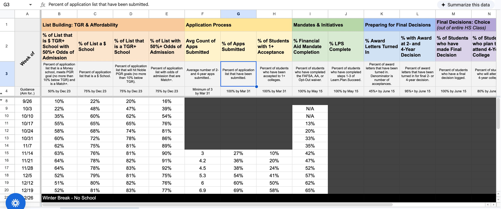
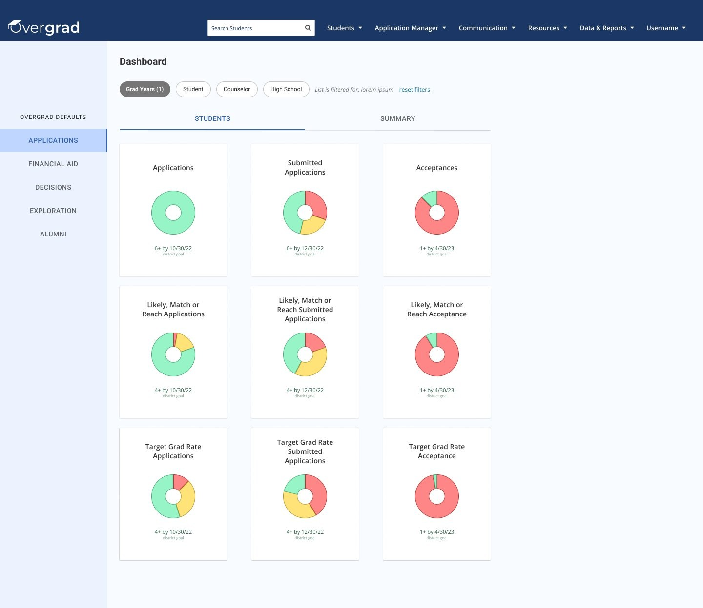

05Overgrad · Postsecondary counseling
Self-serve reporting and live data that ended the weekly BI export.
Role
PM & Designer
Company
Overgrad
Focus
Reporting & viz
Impact
Off Tableau, 1 district
The problem
Insight lived in a weekly export.
To understand their data, teams pulled it out of the product every week and rebuilt it in an external BI tool. The numbers were always a few days stale, locked to whatever segments someone had set up, and entirely dependent on a manual export ever happening.


What we built
Lists you shape, dashboards that stay live.
Flexible, self-serve reporting: build a custom student list against any criteria, then see it visualized in real time, with no export and no second tool.
- Any segment. Filter and group by the dimensions each team cares about.
- Live data. Visualizations read straight from the source, always current.
- Self-serve. Counselors answer their own questions without a data team in the loop.
The outcome
Tableau licenses, cancelled.
Dashboards shipped just before I left Overgrad. Even in that window, the largest district we worked with was able to cancel its Tableau licenses for its college counselors and pull oversight, reporting, and data visualization directly into the product — the same picture they'd been rebuilding by hand, now live.
✓
Largest district cancelled its Tableau licenses
●
Live data, always current
∞
Any segment, self-serve
Next project
The Good Faith Exam →